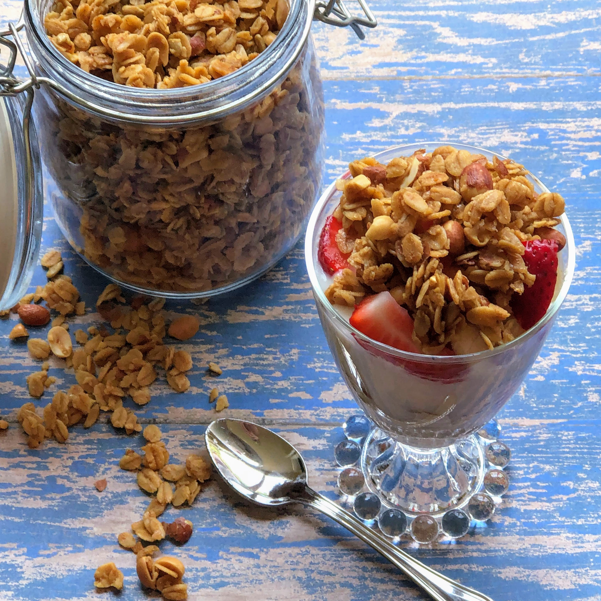

Grandpa's granola

Description
When i moved to providence my grandpa helped me drive out to Rhode Island and he gave me a tool box with an assortment of old fmily tools and thie granola recipe.
The nice thing about this recipe is its a great base that you could take in almost any direction
Ingredients
- 3 cups old fashioned oats
- 1 cup chopped pecans
- 1/2 cup unsweetend coconut
- 3 Tbsp brown sugar
- 3/4 tsp cinnamon
- 1/2 tsp ground ginger
- 1/4 tsp salt
- 1/3 cup honey
- 2 Tbsp vegetable oil
- 1 cup dried cherries
Steps
- Preheat oven to 300 degrees
- In a big bowl combine oats, pecans, coconut, brown sugar, cinnamon, ginger, and salt
- Mix well
- In a microwave safe measuring cup add honey and vegetable oil
- Microwave for 30 seconds and stir with a fork, until emulsified
- Pour over other ingreients and mix well
- Put on to baking sheet and bake 35 minutes, stirring every 10 minutes
- Once nicely browned take out to cool
- Add cherries
- Enjoy!